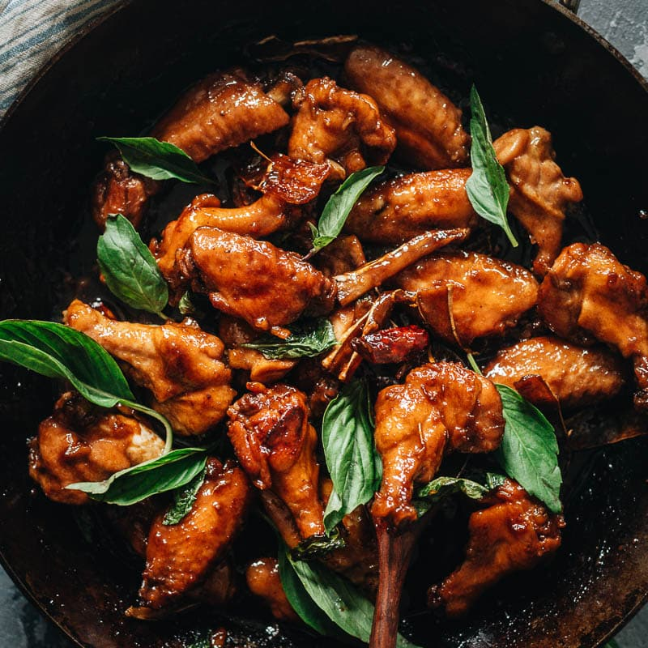

Three Cup Chicken Recipe

Description
A staple of Taiwanese Cuisine, Three Cup Chicken is a classic dish which encorporates Basil, Chicken, Soy-sauce, Rice wine, and garlic into its recipe!
The star of the recipe is of course the Chicken, and while every ingredient has its role to play, the main supporting actor award has to to go to garlic. Without garlic, the Chicken loses its distinctive taste.
List of ingredients needed for this recipe:
- 2 tablespoons Sesame oil
- 1.5 tablespoons Shaoxing Rice Wine
- 3 tablespoons Soy Sauce
- 6 cloves garlic
- 1 lb Chicken
- 1 tablespoon baking soda
- A hearty handful of fresh basil leaves
Directions
- Rub the chicken in baking soda. Set aside for 10 minutes before rinsing with water.
- Heat up a clay pot on high heat and add the sesame oil. Add in the garlic, and any other aromatics of your choice and stirfry until aromatic. Add in the chicken
- Add in the soy sauce and shaoxing wine while continuing to stirfry the chicken. Cover the lid, lower the heat, and let simmer for 5-10 minutes.
- Add in the basil leaves and stir well with the chicken. Serve immediately!